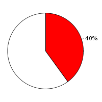

Human (Homo sapiens, GRCh37) and Medaka (Oryzias latipes, MEDAKA1) were aligned using the Translated Blat alignment algorithm (Kent W, Genome Res., 2002;12(4):656-64) in Ensembl release 55. Human was used as the reference species. After running Translated Blat , the raw Translated Blat alignment blocks are chained according to their location in both genomes. During the final netting process, the best sub-chain is chosen in each region on the reference species.
Full list of pairwise alignments| Minimum score (minScore) | 30 |
| Database type (t) | dnax |
| Query type (q) | dnax |
| Mask out repeats (mask) | lower |
| Mask out repeats on query (qmask) | lower |
Number of alignment blocks: 189355
| Genome coverage(bp) | Coding exon coverage (bp) | |
|---|---|---|
| Human |
|
|
| 20,519,180 out of 3,098,825,702 | 15,012,710 out of 35,483,623 | |
| Medaka |
|
 |
| 14,902,708 out of 868,983,502 | 11,956,141 out of 30,193,605 |